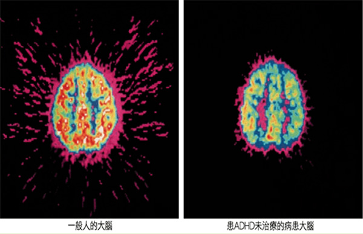
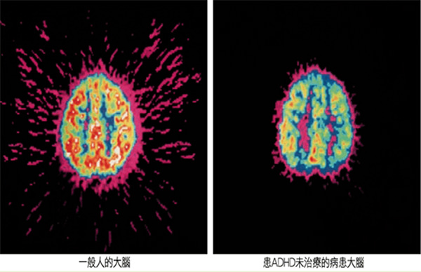
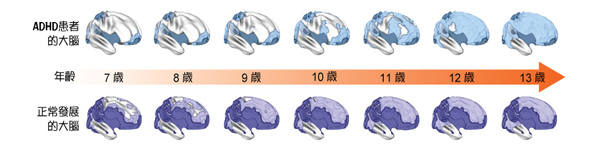

什麼是ADHD
疾病定義
注意力不足過動症(Attention-Deficit/Hyperactivity Disorder, ADHD)是患者大腦的神經傳導物質多巴胺(Dopamine)和正腎上腺素(Norepinephrine)量相較於一般人分泌量偏低，因此出現有聽沒到、有進沒入之症狀，無法有效篩選大腦訊息，嚴重者甚至出現過動及衝動或缺乏行為控制力的症狀。
 

PET掃描下一般人大腦和病患的差異，ADHD的病患葡萄糖代謝活性型顯較低(白、紅、橘代表活性較高) 注意力缺失過動症（ADHD）也就是俗稱的「過動兒」。過動兒的大腦發展得沒有其他小朋友完整所以常常控制不住衝動美國國家健康研究院指出，ADHD患者腦部發展成熟時間會比正常人晚幾年，尤其是大腦前額皮質部分，前額葉主要負責執行功能包括：專注力、計畫能力以及計畫能力以問題解決能力
